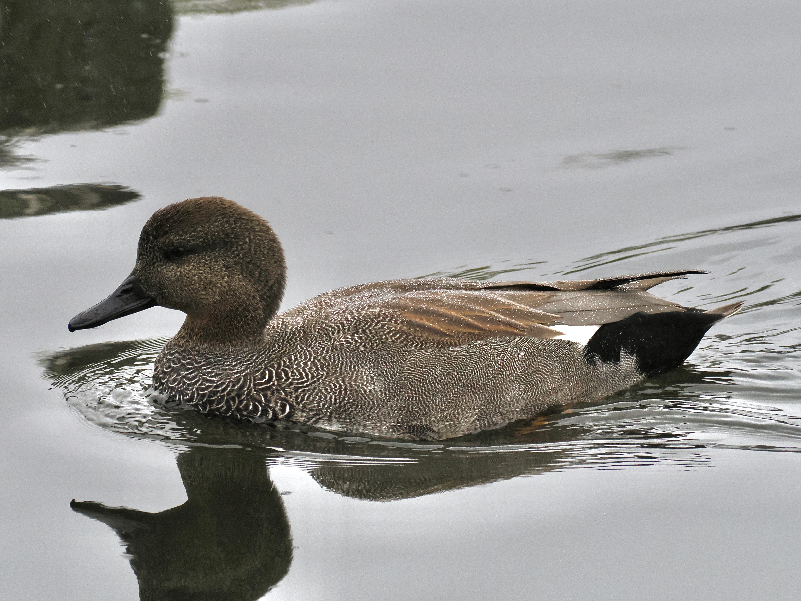
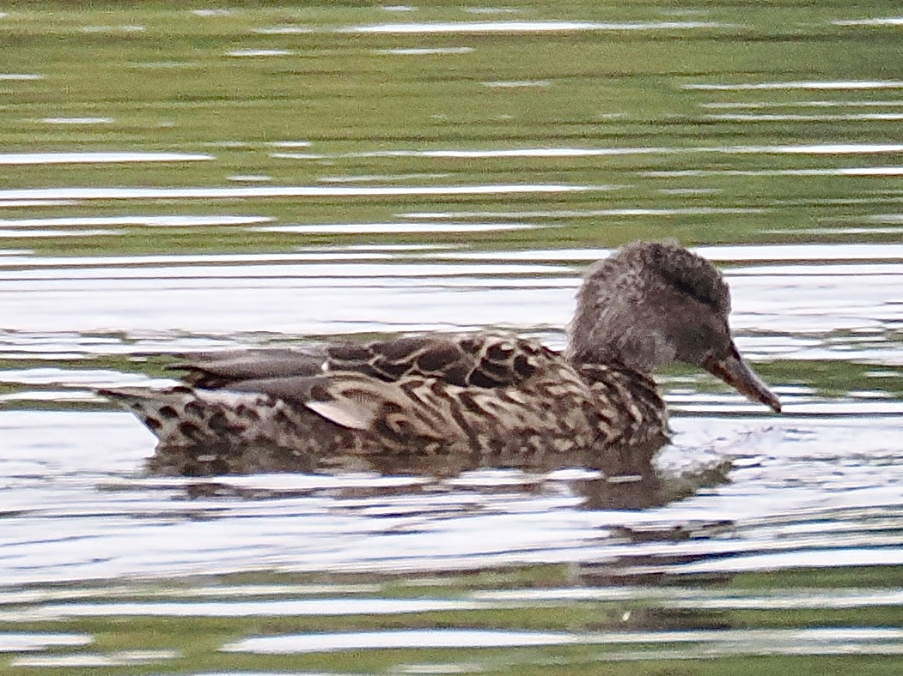

Gadwall
Mareca strepera
Order: Anseriformes
Family: Anatidae

A dull medium-sized duck with a white speculum. Male has a grey-brown vermiculated body and a black rear.

Female is overall brown and quite like Mallard. I do find they have smaller, beadier eyes and a different head and bill shape.